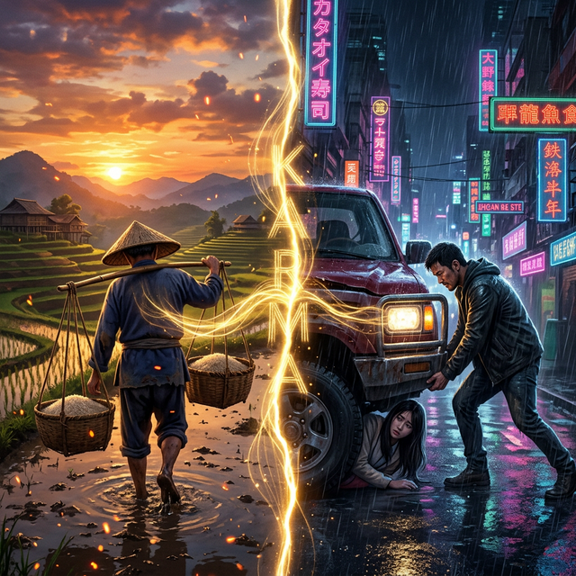
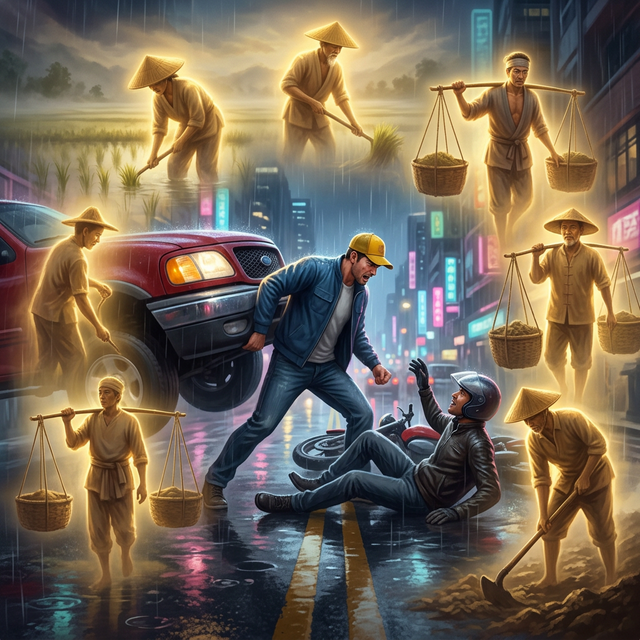
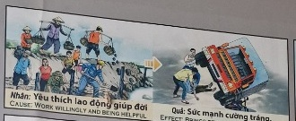

Herencia de la Fuerza Heritage of Strength Eredità della Forza 原力的传承 وراثة القوة Наследство Силы Vererbung der Macht Héritage de la Force フォースの継承 Herança da Força Sự kế thừa của lực lượng
El esfuerzo desinteresado y el vigor del alma. Selfless effort and the soul's vigor. Lo sforzo disinteressato e il vigore dell'anima. 无私的努力和灵魂的活力。 الجهد المتفاني وقوة الروح. Самоотверженные усилия и энергия души. Der selbstlose Einsatz und die Kraft der Seele. L'effort altruiste et la vigueur de l'âme. 無私の努力と魂の活力。 O esforço altruísta e o vigor da alma. Sự nỗ lực quên mình và sức sống của tâm hồn.
Bajo un sol incansable, Chen talló un camino en la roca para unir dos aldeas. Sus manos se volvieron madera, sus hombros acero. Jamás pidió una moneda. Esa entrega pura grabó en su rastro espiritual una inercia de vitalidad que el tiempo no pudo borrar.
Under an untiring sun, Chen carved a path in the rock to connect two villages. His hands became wood, his shoulders steel. He never asked for a coin. That pure self-giving recorded in his spiritual trail an inertia of vitality that time could not erase.
Sotto un sole instancabile, Chen ha scavato un sentiero nella roccia per collegare due villaggi. Le sue mani si trasformarono in legno, le sue spalle in acciaio. Non ha mai chiesto una moneta. Quella dedizione pura ha impresso nella sua traccia spirituale un'inerzia di vitalità che il tempo non ha potuto cancellare.
在不知疲倦的阳光下，陈在岩石上开辟了一条连接两个村庄的道路。他的双手变成了木头，肩膀变成了钢铁。他从来没有要过硬币。那种纯粹的奉献在他的精神痕迹上刻下了一种时间无法抹去的惯性活力。
وتحت شمس لا تعرف الكلل، شق تشن طريقا في الصخر ليربط بين قريتين. تحولت يديه إلى الخشب، وكتفيه إلى الفولاذ. ولم يطلب قط عملة معدنية. هذا التفاني الخالص نقش في أثره الروحي جمودًا من الحيوية لم يستطع الزمن محوه.
Под неутомимым солнцем Чэнь прорубил в скале тропу, соединившую две деревни. Его руки превратились в дерево, плечи — в сталь. Он никогда не просил монеты. Эта чистая преданность делу запечатлела в его духовном следе инерцию жизненной силы, которую время не могло стереть.
Unter der unermüdlichen Sonne schnitzte Chen einen Pfad in den Felsen, um zwei Dörfer zu verbinden. Seine Hände wurden zu Holz, seine Schultern zu Stahl. Er hat nie um eine Münze gebeten. Diese reine Hingabe hat in seine spirituelle Spur eine Trägheit der Vitalität eingeprägt, die die Zeit nicht auslöschen konnte.
Sous un soleil infatigable, Chen a creusé un chemin dans la roche pour relier deux villages. Ses mains se sont transformées en bois, ses épaules en acier. Il n'a jamais demandé de pièce de monnaie. Ce pur dévouement a gravé dans sa trace spirituelle une inertie de vitalité que le temps ne pouvait effacer.
疲れ知らずの太陽の下、チェンさんは岩に道を彫り、2 つの村を結びました。彼の手は木に、肩は鋼に変わりました。彼は決してコインを要求しませんでした。その純粋な献身は彼の精神的な痕跡に刻まれており、時間が経っても消すことのできない活力の慣性を表しています。
Sob um sol incansável, Chen abriu um caminho na rocha para ligar duas aldeias. Suas mãos se transformaram em madeira, seus ombros em aço. Ele nunca pediu uma moeda. Essa dedicação pura gravou no seu traço espiritual uma inércia de vitalidade que o tempo não conseguiu apagar.
Dưới ánh nắng không biết mệt mỏi, Chen đã khắc một con đường vào đá để nối hai ngôi làng. Tay anh biến thành gỗ, vai anh thành thép. Anh ta không bao giờ yêu cầu một đồng xu. Sự cống hiến thuần khiết đó đã khắc sâu vào dấu vết tâm hồn của anh một sức ì quán tính mà thời gian không thể xóa nhòa.
Siglos después, Juan levanta un vehículo rojo para salvar una vida. La fuerza perfecta de Juan hoy es el interés compuesto del ahorro espiritual de Chen ayer. El vigor físico es la recompensa a una vida de laboriosidad.
Centuries later, Juan lifts a red vehicle to save a life. Juan's perfect strength today is the compound interest of Chen's spiritual savings yesterday. Physical vigor is the reward for a life of industriousness.
Secoli dopo, Juan solleva un veicolo rosso per salvare una vita. La forza perfetta di Juan oggi è l'interesse composto dei risparmi spirituali di Chen ieri. Il vigore fisico è la ricompensa per una vita di lavoro.
几个世纪后，胡安举起一辆红色车辆拯救了一条生命。今天娟的完美实力，是陈昨天的精神积蓄的复利。体力是一生勤奋的回报。
بعد قرون، يرفع خوان مركبة حمراء لإنقاذ حياة شخص ما. إن القوة المثالية التي يتمتع بها خوان اليوم هي الفائدة المركبة لمدخرات تشين الروحية بالأمس. القوة البدنية هي مكافأة حياة الصناعة.
Столетия спустя Хуан поднимает красную машину, чтобы спасти жизнь. Совершенная сила Хуана сегодня — это сложные проценты от вчерашних духовных сбережений Чена. Физическая сила — награда за трудолюбивую жизнь.
Jahrhunderte später hebt Juan ein rotes Fahrzeug hoch, um ein Leben zu retten. Juans vollkommene Stärke heute ist der Zinseszins von Chens spirituellen Ersparnissen gestern. Körperliche Kraft ist der Lohn für ein fleißiges Leben.
Des siècles plus tard, Juan soulève un véhicule rouge pour sauver une vie. La force parfaite de Juan aujourd'hui réside dans les intérêts composés des économies spirituelles de Chen hier. La vigueur physique est la récompense d’une vie d’industrie.
数世紀後、フアンは赤い車を持ち上げて命を救いました。今日のフアンの完璧な強さは、昨日のチェンの精神的な貯蓄の複利です。肉体的な活力は、産業人生への報酬です。
Séculos depois, Juan levanta um veículo vermelho para salvar uma vida. A força perfeita de Juan hoje são os juros compostos das economias espirituais de Chen de ontem. O vigor físico é a recompensa por uma vida de trabalho.
Nhiều thế kỷ sau, Juan nâng chiếc xe màu đỏ lên để cứu một mạng sống. Sức mạnh hoàn hảo của Juan ngày hôm nay chính là lãi kép từ khoản tiền tiết kiệm tinh thần của Chen ngày hôm qua. Sức mạnh thể chất là phần thưởng cho một cuộc sống cần cù.
Interpretación del Templo
Temple Interpretation
Interpretazione del Tempio
寺庙的解读
تفسير الهيكل
Интерпретация Храма
Interpretation des Tempels
Interprétation du Temple
寺院の解釈
Interpretação do Templo
Giải thích về ngôi đền
A la izquierda la Causa: campesinos trabajando por el bien común. A la derecha el Efecto: un hombre con fuerza sobrehumana. El vigor de hoy es el sudor compartido de ayer.
On the left the Cause: peasants working for the common good. On the right the Effect: a man with superhuman strength. Today's vigor is yesterday's shared sweat.
A sinistra la Causa: contadini che lavorano per il bene comune. A destra l'Effetto: un uomo dalla forza sovrumana. Il vigore di oggi è il sudore condiviso di ieri.
左边的事业：农民为共同利益而工作。右边的效果：一个拥有超人力量的人。今天的活力是昨天共同的汗水。
على اليسار القضية: الفلاحون يعملون من أجل الصالح العام. على اليمين التأثير: رجل يتمتع بقوة خارقة. إن قوة اليوم هي عرق الأمس المشترك.
Слева: Дело: крестьяне, работающие на общее благо. Справа Эффект: мужчина со сверхчеловеческой силой. Сегодняшняя энергия — это вчерашний общий пот.
Links die Sache: Bauern, die sich für das Gemeinwohl einsetzen. Rechts der Effekt: ein Mann mit übermenschlichen Kräften. Die Kraft von heute ist der gemeinsame Schweiß von gestern.
A gauche la Cause : des paysans œuvrant pour le bien commun. A droite l'Effet : un homme à la force surhumaine. La vigueur d’aujourd’hui est la sueur partagée d’hier.
左側は大義:共通利益のために働く農民。右側はエフェクト：超人的な力を持つ男。今日の活力は昨日の分かち合った汗です。
À esquerda, a Causa: camponeses trabalhando pelo bem comum. À direita, o Efeito: um homem com força sobre-humana. O vigor de hoje é o suor compartilhado de ontem.
Bên trái Nguyên nhân: nông dân làm việc vì lợi ích chung. Bên phải Hiệu ứng: một người đàn ông có sức mạnh siêu phàm. Sức sống hôm nay là mồ hôi chung của ngày hôm qua.
La Semilla del Constructor
The Builder's Seed
Il seme del costruttore
建造者的种子
بذرة البناء
Семя строителя
Der Samen des Baumeisters
La graine du bâtisseur
ビルダーズシード
A semente do construtor
Hạt giống của người xây dựng
Imagina a un humilde constructor que, bajo un sol abrasador, levantaba un muro de piedra para proteger a su aldea. No cobraba nada, solo lo hacía por amor a su gente. Sus manos sangraban, y muchos le llamaban tonto por trabajar para los demás...
Pero cada piedra pesada que cargaba, sin saberlo, no solo construía un muro, sino que forjaba sus propios hombros. Estaba esculpiendo en su alma la fuerza de un gigante.
El tiempo pasó como un suspiro, y en otra vida, este mismo hombre despertó en una ciudad de hierro y asfalto. Allí vio un pesado vagón a punto de aplastar a un niño. Sin dudarlo, interpuso sus brazos y detuvo el amasijo de metal. La fuerza no vino de la nada; era el músculo espiritual de aquel constructor que regresó a él... para que pudiera ser el milagro que alguien estaba suplicando.
Imagine a humble builder who, under a scorching sun, built a stone wall to protect his village. He didn't charge anything, he only did it out of love for his people. His hands were bleeding, and many called him a fool for working for others...
But each heavy stone he carried, unknowingly, not only built a wall, but forged his own shoulders. He was sculpting the strength of a giant in his soul.
Time passed like a sigh, and in another life, this same man woke up in a city of iron and asphalt. There he saw a heavy wagon about to crush a child. Without hesitation, he put his arms between them and stopped the mass of metal. The strength did not come from nowhere; It was the spiritual muscle of that builder who returned to him... so that he could be the miracle someone was begging for.
Immaginate un umile costruttore che, sotto un sole cocente, ha costruito un muro di pietra per proteggere il suo villaggio. Non ha chiesto nulla, lo ha fatto solo per amore verso la sua gente. Le sue mani sanguinavano e molti lo definivano uno sciocco perché lavorava per gli altri...
Ma ogni pietra pesante che trasportava, inconsapevolmente, non solo costruiva un muro, ma forgiava anche le sue stesse spalle. Stava scolpindo nella sua anima la forza di un gigante.
Il tempo passò come un sospiro e, in un'altra vita, lo stesso uomo si svegliò in una città di ferro e asfalto. Là vide un carro pesante che stava per schiacciare un bambino. Senza esitazione, mise le braccia in mezzo a loro e fermò la massa di metallo. La forza non è venuta dal nulla; Era il muscolo spirituale di quel costruttore che ritornava da lui... affinché potesse essere il miracolo che qualcuno implorava.
想象一下，一个卑微的建设者在烈日下建造了一堵石墙来保护他的村庄。他不收取任何费用，只是出于对人民的爱。他的手在流血，很多人都说他是个傻瓜，因为他为别人工作……
但他背负的每一块重石，在不知不觉中不仅筑起了一道墙，也锻造了自己的肩膀。他正在灵魂中雕刻着巨人的力量。
时间如叹息般流逝，在另一世，这个人在一座钢铁和沥青的城市中醒来。在那里，他看到一辆沉重的马车即将压死一个孩子。他毫不犹豫地伸出双臂，挡住了那团金属。这种力量并非凭空而来；正是那个建设者的精神力量回到了他身边……这样他就可以成为某人所祈求的奇迹。
تخيل بناءًا متواضعًا قام، تحت أشعة الشمس الحارقة، ببناء جدار حجري لحماية قريته. لم يتقاضى أي شيء، لقد فعل ذلك فقط من منطلق محبته لشعبه. كانت يداه تنزفان، ووصفه الكثيرون بأنه أحمق لأنه يعمل لصالح الآخرين...
لكن كل حجر ثقيل حمله، دون أن يدري، لم يبني جدارًا فحسب، بل صنع كتفيه أيضًا. كان ينحت قوة العملاق في روحه.
مر الوقت كالتنهيدة، وفي حياة أخرى، استيقظ هذا الرجل نفسه في مدينة من حديد وأسفلت. وهناك رأى عربة ثقيلة على وشك أن تسحق طفلاً. ومن دون تردد وضع ذراعيه بينهما وأوقف الكتلة المعدنية. القوة لم تأت من العدم. لقد كانت العضلة الروحية لذلك البناء هي التي عادت إليه... ليكون هو المعجزة التي كان يتوسل إليها البعض.
Представьте себе скромного строителя, который под палящим солнцем построил каменную стену, чтобы защитить свою деревню. Он ничего не взимал, он делал это только из любви к своему народу. Его руки были в крови, и многие называли его дураком за то, что он работает на других...
Но каждый тяжелый камень, который он нес, сам того не зная, не только построил стену, но и выковал ему собственные плечи. Он лепил в своей душе силу гиганта.
Время пролетело как вздох, и в другой жизни этот самый человек проснулся в городе из железа и асфальта. Там он увидел тяжелую повозку, которая собиралась раздавить ребенка. Без колебаний он просунул между ними руки и остановил массу металла. Сила не пришла из ниоткуда; Это была духовная сила того строителя, которая вернулась к нему... чтобы он мог стать тем чудом, о котором кто-то просил.
Stellen Sie sich einen bescheidenen Baumeister vor, der unter sengender Sonne eine Steinmauer baute, um sein Dorf zu schützen. Er verlangte nichts, er tat es nur aus Liebe zu seinem Volk. Seine Hände bluteten und viele nannten ihn einen Dummkopf, weil er für andere arbeitete ...
Aber jeder schwere Stein, den er unwissentlich trug, baute nicht nur eine Mauer, sondern formte auch seine eigenen Schultern. Er formte die Stärke eines Riesen in seiner Seele.
Die Zeit verging wie ein Seufzer, und in einem anderen Leben erwachte derselbe Mann in einer Stadt aus Eisen und Asphalt. Dort sah er einen schweren Wagen, der gerade dabei war, ein Kind zu zerquetschen. Ohne zu zögern schob er seine Arme dazwischen und stoppte die Metallmasse. Die Kraft kam nicht aus dem Nichts; Es war der spirituelle Muskel dieses Erbauers, der zu ihm zurückkehrte ... damit er das Wunder sein konnte, um das jemand bettelte.
Imaginez un humble bâtisseur qui, sous un soleil de plomb, construit un mur de pierre pour protéger son village. Il n'a rien demandé, il l'a fait uniquement par amour pour son peuple. Ses mains saignaient et beaucoup le traitaient d'idiot parce qu'il travaillait pour les autres...
Mais chaque pierre lourde qu'il portait, sans le savoir, non seulement construisait un mur, mais forgeait également ses propres épaules. Il sculptait dans son âme la force d'un géant.
Le temps a passé comme un soupir, et dans une autre vie, ce même homme s'est réveillé dans une ville de fer et d'asphalte. Là, il aperçut un lourd chariot sur le point d'écraser un enfant. Sans hésitation, il passa ses bras entre eux et arrêta la masse de métal. La force n’est pas venue de nulle part ; C'est le muscle spirituel de ce bâtisseur qui lui est revenu... pour qu'il puisse être le miracle que quelqu'un implorait.
灼熱の太陽の下、村を守るために石の壁を築いた謙虚な建築家を想像してみてください。彼は何も請求しませんでした、彼はただ国民への愛からそれを行いました。彼の手は血を流していて、多くの人は彼を他人のために働く愚か者だと呼びました...
しかし、彼が運んだ重い石は、知らず知らずのうちに壁を築いただけでなく、自分自身の肩を鍛えていました。彼は魂の中に巨人の強さを刻み込んでいました。
ため息のように時間が過ぎ、同じ男が別の人生で鉄とアスファルトの街で目を覚ました。そこで彼は、重いワゴンが子供を押しつぶそうとしているのを見た。彼は迷わず腕を二人の間に入れて金属の塊を止めた。その強さはどこからともなく生まれたわけではありません。彼の元に戻ってきたのは、あのビルダーの精神的な筋肉でした…彼が誰かが求めていた奇跡になるために。
Imagine um humilde construtor que, sob um sol escaldante, construiu um muro de pedra para proteger a sua aldeia. Ele não cobrou nada, só fez por amor ao seu povo. Suas mãos sangravam e muitos o chamavam de tolo por trabalhar para os outros...
Hãy tưởng tượng một người thợ xây khiêm tốn, dưới ánh mặt trời thiêu đốt, đã xây một bức tường đá để bảo vệ ngôi làng của mình. Anh ấy không thu phí bất cứ điều gì, anh ấy chỉ làm điều đó vì tình yêu với người dân của mình. Tay anh ấy đang chảy máu và nhiều người gọi anh ấy là kẻ ngốc khi làm việc cho người khác...
Mas cada pedra pesada que ele carregava, sem saber, não apenas construía um muro, mas forjava seus próprios ombros. Ele estava esculpindo a força de um gigante em sua alma.
Nhưng mỗi tảng đá nặng anh vác, vô tình, không chỉ xây nên một bức tường mà còn rèn nên đôi vai của chính anh. Anh ấy đang điêu khắc sức mạnh của một người khổng lồ trong tâm hồn mình.
O tempo passou como um suspiro e, em outra vida, esse mesmo homem acordou numa cidade de ferro e asfalto. Lá ele viu uma carroça pesada prestes a esmagar uma criança. Sem hesitar, ele colocou os braços entre eles e parou a massa de metal. A força não veio do nada; Foi o músculo espiritual daquele construtor que voltou para ele... para que ele pudesse ser o milagre que alguém implorava.
Thời gian trôi qua như một tiếng thở dài, và ở một kiếp khác, cũng chính người đàn ông này tỉnh dậy trong một thành phố toàn sắt và nhựa. Ở đó, anh nhìn thấy một chiếc xe nặng sắp đè bẹp một đứa trẻ. Không chút do dự, anh đặt tay mình vào giữa họ và chặn khối kim loại lại. Sức mạnh không đến từ đâu cả; Chính cơ bắp tinh thần của người thợ xây đó đã quay trở lại với anh ta... để anh ta có thể trở thành điều kỳ diệu mà ai đó đang cầu xin.

La Inspiración Original
The Original Inspiration
L'Ispirazione Originale
最初的灵感
الإلهام الأصلي
Оригинальное вдохновение
Die Ursprüngliche Inspiration
L'Inspiration Originale
元のインスピレーション
A Inspiração Original
Nguồn cảm hứng ban đầu
La historia que hemos relatado en este capítulo está inspirada por el pasaje de la escena original de los murales «Tranh Nhân Quả» (Ilustraciones del Karma) del Templo Linh Ung en Da Nang, capturado en la imagen.
La storia che abbiamo raccontato in questo capitolo è ispirata al passaggio della scena originale dei murali “Tranh Nhân Quả” (Illustrazioni del Karma) del Tempio Linh Ung a Da Nang, catturati nell'immagine.
我们在本章中讲述的故事的灵感来自图像中捕获的岘港灵应寺“Tranh Nhân Quả”（业力插图）壁画的原始场景。
القصة التي رويناها في هذا الفصل مستوحاة من مقطع من المشهد الأصلي لجداريات "ترانه نهان كو" (الرسوم التوضيحية للكارما) لمعبد لينه أونغ في دا نانغ، الملتقطة في الصورة.
История, которую мы рассказали в этой главе, вдохновлена отрывком из оригинальной сцены фрески «Тран Нхан Ку» («Иллюстрации кармы») храма Линь Унг в Дананге, запечатленной на изображении.
Die Geschichte, die wir in diesem Kapitel erzählt haben, ist inspiriert von der Passage aus der Originalszene der Wandgemälde „Tranh Nhân Quả“ (Illustrationen von Karma) des Linh Ung-Tempels in Da Nang, die im Bild festgehalten ist.
L'histoire que nous avons racontée dans ce chapitre est inspirée du passage de la scène originale des peintures murales « Tranh Nhân Quả » (Illustrations du Karma) du temple Linh Ung à Da Nang, capturées dans l'image.
この章で私たちが語った物語は、ダナンのリンウン寺院の壁画「Tranh Nhân Quả」（カルマの図）の元のシーンの一節からインスピレーションを得て、画像に収められています。
A história que contamos neste capítulo é inspirada na passagem da cena original dos murais “Tranh Nhân Quả” (Ilustrações do Karma) do Templo Linh Ung em Da Nang, capturada na imagem.
Câu chuyện chúng tôi kể trong chương này được lấy cảm hứng từ đoạn trích từ cảnh gốc của bức tranh tường “Tranh Nhân Quả” ở chùa Linh Ứng ở Đà Nẵng, được ghi lại trong hình ảnh.
The story we have related in this chapter is inspired by the passage from the original scene of the "Tranh Nhân Quả" (Karma Illustrations) murals at the Linh Ung Temple in Da Nang, captured in the image.

Como se puede apreciar en el pasaje extraído del mural, la causa y su efecto kármico están descritos originalmente en vietnamita y con una breve traducción al inglés. A continuación, te ofrecemos la traducción y el análisis en tu idioma:
As can be seen in the passage extracted from the mural, the cause and its karmic effect are originally described in Vietnamese with a brief English translation. Below, we offer the translation and analysis in your language:
Come si può vedere nel brano tratto dal murale, la causa e il suo effetto karmico sono originariamente descritti in vietnamita e con una breve traduzione in inglese. Di seguito offriamo la traduzione e l'analisi nella tua lingua:
从壁画的段落中可以看出，因果及其业果最初是用越南语描述的，并有简短的英文翻译。下面我们提供您的语言的翻译和分析：
وكما يتبين من المقطع المأخوذ من اللوحة الجدارية، فإن السبب وتأثيره الكارمي موصوفان في الأصل باللغة الفيتنامية مع ترجمة مختصرة إلى الإنجليزية. نقدم أدناه الترجمة والتحليل بلغتك:
Как видно из отрывка, взятого из фрески, причина и ее кармическое следствие изначально описаны на вьетнамском языке и с кратким переводом на английский язык. Ниже мы предлагаем перевод и анализ на ваш язык:
Wie aus der Passage aus dem Wandgemälde hervorgeht, werden die Ursache und ihre karmische Wirkung ursprünglich auf Vietnamesisch und mit einer kurzen Übersetzung ins Englische beschrieben. Nachfolgend bieten wir die Übersetzung und Analyse in Ihrer Sprache an:
Comme on peut le voir dans le passage tiré de la peinture murale, la cause et son effet karmique sont initialement décrits en vietnamien et avec une brève traduction en anglais. Ci-dessous, nous proposons la traduction et l’analyse dans votre langue :
壁画の一節からわかるように、原因とそのカルマ的影響はもともとベトナム語で説明されており、英語への簡単な翻訳が付けられています。以下にあなたの言語での翻訳と分析を提供します。
Como pode ser visto no trecho retirado do mural, a causa e seu efeito cármico são originalmente descritos em vietnamita e com uma breve tradução para o inglês. Abaixo oferecemos a tradução e análise em seu idioma:
Như có thể thấy trong đoạn trích từ bức tranh tường, nguyên nhân và nghiệp quả của nó ban đầu được mô tả bằng tiếng Việt và có bản dịch ngắn gọn sang tiếng Anh. Dưới đây chúng tôi cung cấp bản dịch và phân tích bằng ngôn ngữ của bạn:
🇻🇳 Tiếng Việt:
Nhân: Yêu thích lao động giúp đời.
Quả: Sức mạnh cường tráng.
🇬🇧 English Translation:
Cause: Work willingly and being helpful.
Effect: Brings perfect physical health.
Traducción Recreada:
Causa: Trabajar de buena gana y ayudar a los demás.
Efecto: Gran fuerza e impecable salud física.
Recreated Translation:
Cause: To work willingly and help others.
Effect: Great strength and impeccable physical health.
Traduzione ricreata:
Causa: lavorare volentieri e aiutare gli altri.
Effetto: grande forza e salute fisica impeccabile.
重新翻译：
因：乐于工作，帮助他人。
果：体力充沛，身体健康无瑕。
إعادة إنشاء الترجمة:
السبب: العمل عن طيب خاطر ومساعدة الآخرين.
التأثير: قوة كبيرة وصحة بدنية لا تشوبها شائبة.
Воссозданный перевод:
Причина: Желание работать и помогать другим.
Эффект: Огромная сила и безупречное физическое здоровье.
Nachgebildete Übersetzung:
Ursache: Bereitwillig arbeiten und anderen helfen.
Wirkung: Große Kraft und tadellose körperliche Gesundheit.
Traduction recréée :
Cause : Travailler volontairement et aider les autres.
Effet : Grande force et santé physique impeccable.
再作成された翻訳:
原因: 進んで働き、他の人を助けること。
効果: 優れた体力と非の打ち所のない身体的健康。
Tradução recriada:
Causa: Trabalhar com boa vontade e ajudar os outros.
Efeito: Grande força e saúde física impecável.
Bản dịch được tạo lại:
Nguyên nhân: Sẵn sàng làm việc và giúp đỡ người khác.
Tác dụng: Sức mạnh tuyệt vời và sức khỏe thể chất hoàn hảo.
Análisis: El altruismo físico se cristaliza en la fortaleza de nuestro propio ser. Cada gota de sudor invertida en aliviar la carga de nuestro prójimo, lejos de agotarnos en el tiempo, retorna en nuestra complexión celular otorgándonos esa robustez y vitalidad inquebrantable a la que tanto aspiramos en vidas futuras o realidades solapadas.
Analysis: Physical altruism crystallizes in the strength of our own being. Every drop of sweat invested in alleviating the burden of our neighbor, far from exhausting us over time, returns to our cellular complexion, granting us that robustness and unbreakable vitality to which we so aspire in future lives or overlapping realities.
Analisi: L'altruismo fisico si cristallizza nella forza del nostro stesso essere. Ogni goccia di sudore investita nell'alleviare il peso del nostro prossimo, lungi dall'esaurirci nel tempo, ritorna alla nostra struttura cellulare, garantendoci quella robustezza e quella vitalità indistruttibile a cui aspiriamo tanto nelle vite future o nelle realtà sovrapposte.
分析：身体利他主义体现在我们自身存在的力量中。为减轻邻居的负担而付出的每一滴汗水，远不会随着时间的推移而让我们精疲力尽，反而会回归我们的细胞肤色，赋予我们在未来的生活或重叠的现实中所渴望的强健和坚不可摧的活力。
التحليل: تتبلور الإيثار الجسدي في قوة كياننا. كل قطرة عرق نستثمرها في تخفيف عبء جيراننا، بعيدًا عن إرهاقنا بمرور الوقت، تعود إلى بشرتنا الخلوية، وتمنحنا تلك القوة والحيوية غير القابلة للكسر التي نطمح إليها في حياتنا المستقبلية أو الحقائق المتداخلة.
Анализ. Физический альтруизм кристаллизуется в силе нашего собственного существа. Каждая капля пота, вложенная в облегчение бремени нашего ближнего, не только не утомляет нас с течением времени, но и возвращается в нашу клеточную структуру, даруя нам ту надежность и несокрушимую жизненную силу, к которой мы так стремимся в будущих жизнях или пересекающихся реальностях.
Analyse: Physischer Altruismus kristallisiert sich in der Stärke unseres eigenen Wesens heraus. Jeder Tropfen Schweiß, der in die Linderung der Last unseres Nächsten investiert wird, erschöpft uns nicht mit der Zeit, sondern kehrt in unsere Zellstruktur zurück und verleiht uns die Robustheit und unzerbrechliche Vitalität, nach der wir in zukünftigen Leben oder sich überschneidenden Realitäten so streben.
Analyse : L'altruisme physique se cristallise dans la force de notre propre être. Chaque goutte de sueur investie pour alléger le fardeau du prochain, loin de nous épuiser au fil du temps, retourne à notre teint cellulaire, nous accordant cette robustesse et cette vitalité incassable à laquelle nous aspirons tant dans les vies futures ou les réalités qui se chevauchent.
分析: 物理的な利他主義は、私たち自身の存在の強さに結晶します。隣人の負担を軽減するために費やされた汗の一滴一滴は、時間が経つにつれて私たちを疲れさせるどころか、私たちの細胞の肌に戻り、私たちが将来の生活や重なり合う現実で切望する強さと壊れない活力を与えてくれます。
Análise: O altruísmo físico se cristaliza na força do nosso próprio ser. Cada gota de suor investida no alívio do fardo do próximo, longe de nos esgotar com o tempo, regressa à nossa tez celular, concedendo-nos aquela robustez e vitalidade inquebrantável a que tanto aspiramos nas vidas futuras ou nas realidades sobrepostas.
Phân tích: Lòng vị tha thể chất kết tinh trong sức mạnh của chính con người chúng ta. Mỗi giọt mồ hôi đầu tư vào việc giảm bớt gánh nặng cho người hàng xóm, không làm chúng ta kiệt sức theo thời gian, sẽ quay trở lại làn da tế bào của chúng ta, mang lại cho chúng ta sự mạnh mẽ và sức sống không thể phá vỡ mà chúng ta hằng khao khát trong những cuộc sống tương lai hoặc những thực tại chồng chéo.
Si quieres conocer más sobre el proyecto o colaborar, accede a nuestro Linktree.
If you want to know more about the project or collaborate, access our Linktree.
Se vuoi saperne di più sul progetto o collaborare, accedi al nostro Linktree.
如果您想了解有关该项目或合作的更多信息，请访问我们的 Linktree.
إذا كنت تريد معرفة المزيد عن المشروع أو التعاون، قم بالوصول إلى موقعنا Linktree.
Если вы хотите узнать больше о проекте или сотрудничать, посетите наш Linktree.
Wenn Sie mehr über das Projekt erfahren oder zusammenarbeiten möchten, greifen Sie auf unsere zu Linktree.
Si vous souhaitez en savoir plus sur le projet ou collaborer, accédez à notre Linktree.
プロジェクトについて詳しく知りたい場合、またはコラボレーションしたい場合は、こちらにアクセスしてください。 Linktree.
Se quiser saber mais sobre o projeto ou colaborar, acesse nosso Linktree.
Nếu bạn muốn biết thêm về dự án hoặc hợp tác, hãy truy cập Linktree của chúng tôi.